ANDER
THE WORLD OF WES ANDERSON
Wes Anderson has created
one of the most recognizable
cinematic languages in modern film.
From
perfect center framing to nostalgic palettes and storybook tones,
his films feel like stepping into a handcrafted universe where every
detail matters. Scroll to explore the visual rules, storytelling methods,
and creative quirks that make his world unique.
SONIAN
THE WES ANDERSON COLOR LANGUAGE
Color is not decoration in a Wes Anderson film — it is emotion, mood, and identity.Each film has a carefully curated palette that acts like its own visual signature
Instead of using CGI, Anderson builds his universes by hand — trains, hotels, submarines, cities — all crafted like museum exhibits.
The Grand
Budapest Hotel
Moonrise
Kingdom
Fantastic
Mr.Fox
Asteroid
City
The French
Dispatch
 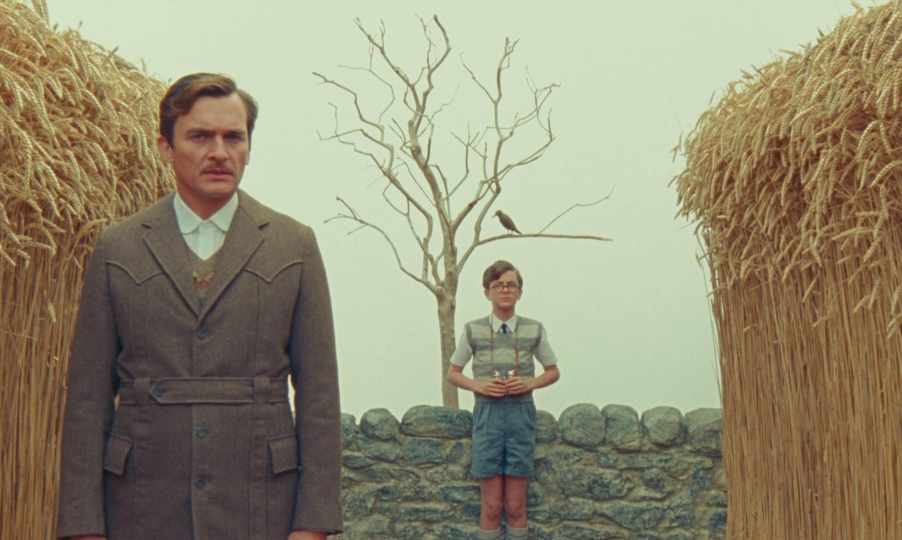
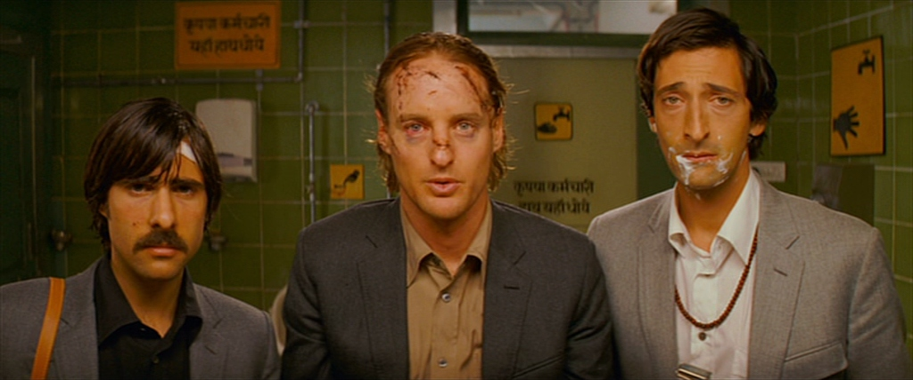
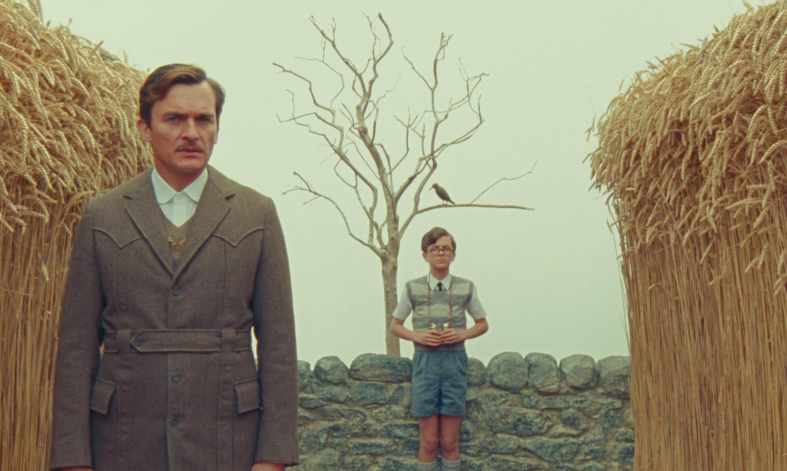
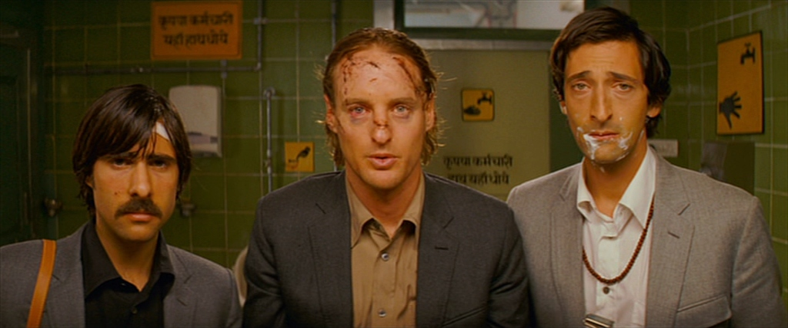
 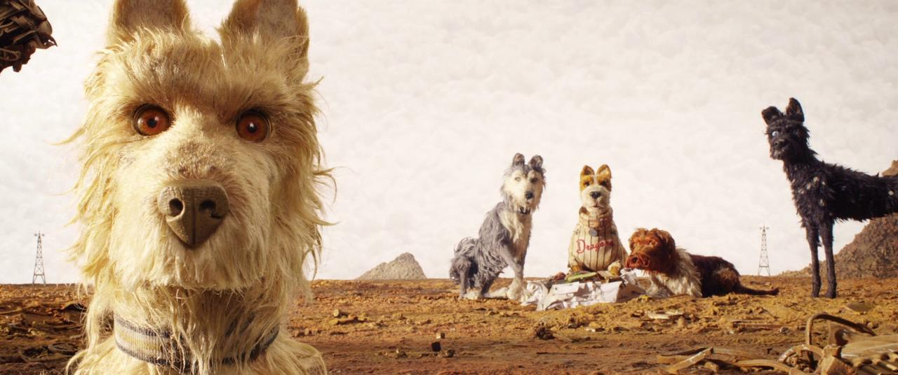
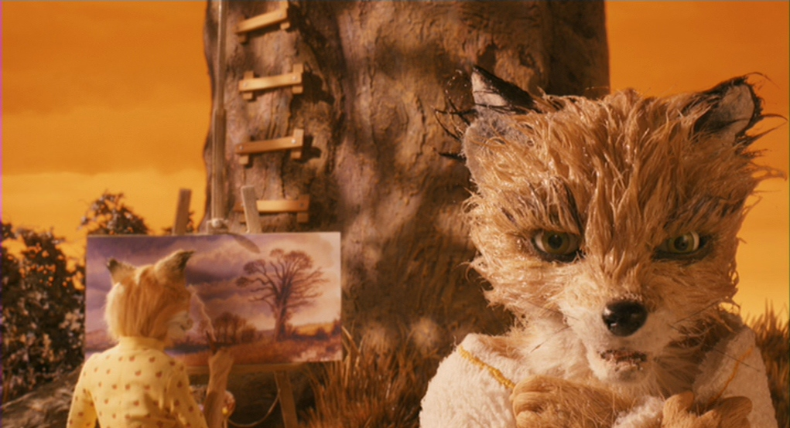
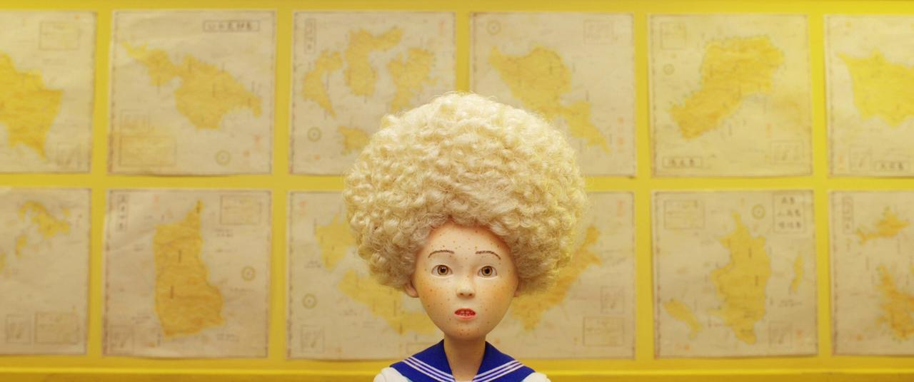
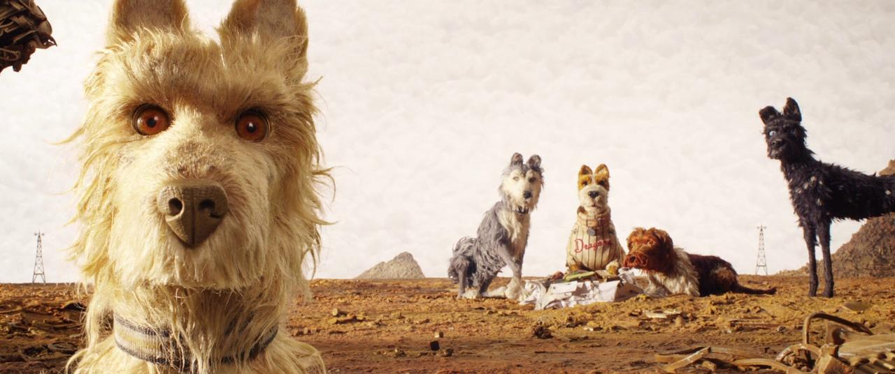
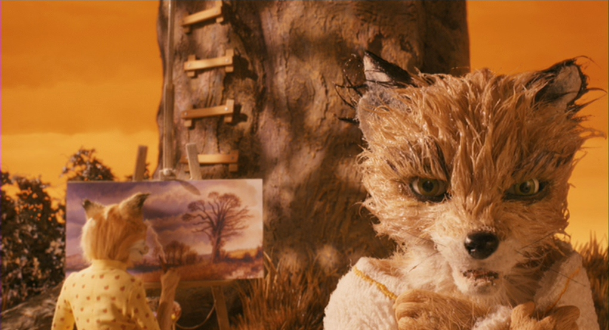
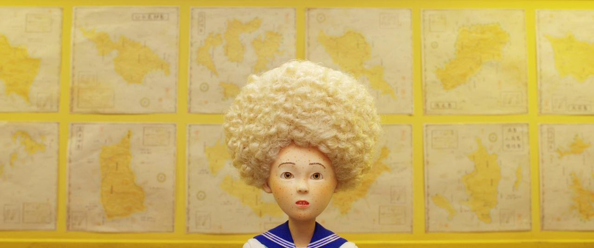


 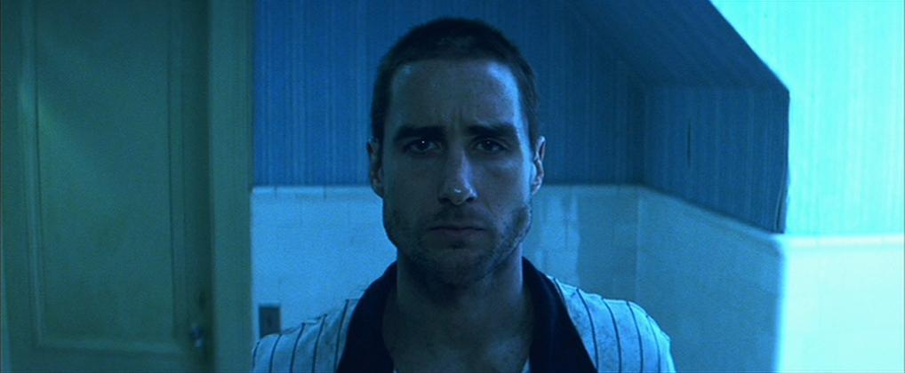
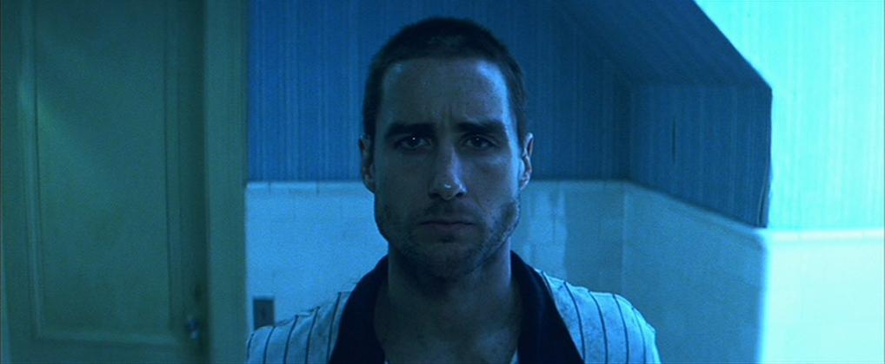